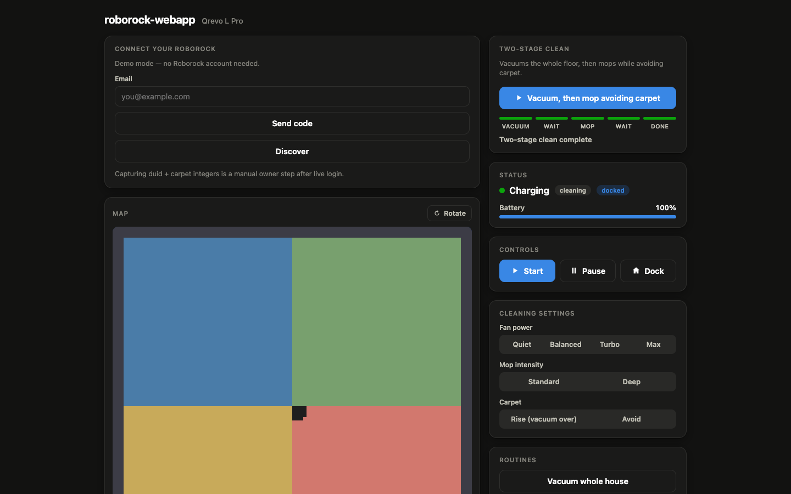

A fast, dependency-free control panel for your robot — with one headline trick the mobile app simply doesn't offer: vacuum everywhere, then mop only the hard floors.
The headline feature
Carpet and a wet mop pad don't mix. This runs a carpet-aware two-stage clean so your robot vacuums everywhere including carpet, then comes back to mop only the hard floors.
The robot lifts its mop and vacuums the whole floor plan, riding up and over carpet for a proper deep pass.
It returns to mop the hard floors only, actively avoiding every carpet zone so a wet pad never touches your rugs.
Two passes, one button.
Orchestrated for you and triggered by a single click. No fiddling with carpet modes between runs, no babysitting the app to swap settings halfway through.
It's the kind of routine the mobile app makes you build by hand — here it just works, with live stage progress from vacuum to done.
Runs locally
No cloud middleman for the UI, no account handed to a third party. The server runs on your own computer and talks to your robot — nothing about your session leaves the box.
The web server listens on 127.0.0.1 only — reachable from your machine and nowhere else.
Your login session file lives on your machine and never leaves it. Credentials aren't uploaded, synced, or shared.
Open source and self-hosted. Read the code, run it yourself, keep full control of your robot and your data.
Quickstart
Python 3.12 with uv. It starts in fake mode with no account, so you can try it on your laptop right now.
Runs entirely local, binds to localhost.
Everything below in your browser — no login needed in fake mode.
git clone https://github.com/zarifaziz/roborock-automation cd roborock-automation uv run uvicorn roborock_auto.adapters.web.server:app \ --host 127.0.0.1 --port 8000 # open http://127.0.0.1:8000
A look inside
Connect flow, live map, room selection, controls, and the two-stage routine — all in one clean page, light or dark.
